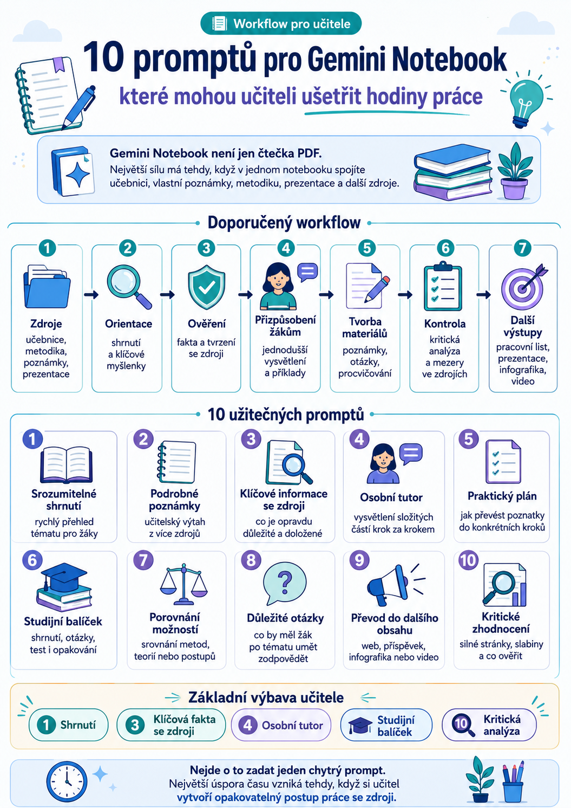

Gemini Notebook může být pro učitele mnohem víc než místo, kam nahrajete PDF a necháte si ho shrnout.
Jeho skutečná síla se ukáže ve chvíli, kdy do jednoho notebooku vložíte více zdrojů k určitému tématu – například učebnici, vlastní poznámky, metodické materiály, prezentace, odborné texty nebo další podklady – a necháte AI pracovat nad touto sadou jako nad jedním znalostním celkem.
Místo jednotlivých náhodných dotazů si můžeme vytvořit opakovatelný workflow, který vede od rychlého pochopení zdrojů až k přípravě studijních materiálů, procvičování nebo kritické analýze.
Následujících deset promptů je upraveno speciálně pro práci učitele.

Doporučený workflow
Nemusíte pokaždé použít všech deset promptů.
Pro běžnou přípravu tématu může stačit například tento postup:
Podle potřeby pak můžete přidat porovnání, otázky, praktický plán nebo převod obsahu do dalších formátů.
1. Přeměň zdroje na srozumitelné shrnutí pro žáky
Tento prompt se hodí ve chvíli, kdy se potřebujete rychle zorientovat v novém tématu nebo připravit jednoduchý zápis pro žáky.
Prompt
Zahrň:
• hlavní smysl tématu,
• 5 nejdůležitějších myšlenek,
• jednoduché vysvětlení každé z nich,
• důležitá fakta a příklady,
• klíčové pojmy s jednoduchou definicí,
• část „Co si z toho má žák zapamatovat“.
Nepoužívej zbytečně odborný jazyk. Pokud je odborný termín nutný, okamžitě jej vysvětli jednoduchými slovy.
Pracuj pouze s informacemi obsaženými ve zdrojích notebooku. U důležitých tvrzení uveď odkaz na příslušný zdroj.
K čemu se hodí
Například k vytvoření:
- zápisu do sešitu,
- úvodu do nové kapitoly,
- shrnutí před testem,
- jednodušší varianty textu pro slabší žáky.
2. Vytvoř podrobné poznámky ze všech zdrojů
Pokud máme v notebooku větší množství materiálů, můžeme z nich vytvořit strukturované učitelské poznámky.
Prompt
Postupuj podle jednotlivých kapitol nebo tematických částí.
U každé části uveď:
• hlavní myšlenku,
• důležité podpůrné informace,
• fakta, příklady, data nebo statistiky,
• klíčové pojmy a jejich jednoduché definice,
• praktický příklad nebo využití,
• jednu větu shrnující celou část.
Nakonec vytvoř seznam 10 nejdůležitějších poznatků z celého tématu.
Odděl informace, které jsou zásadní pro zvládnutí učiva, od informací doplňkových.
Vycházej pouze ze zdrojů notebooku.
K čemu se hodí
Výborný prompt pro situaci, kdy máte několik různých materiálů a nechcete je znovu celé pročítat a ručně spojovat.
Může posloužit jako základ:
- přípravy na hodinu,
- výkladu,
- prezentace,
- pracovního listu,
- vlastního učitelského přehledu.
3. Najdi nejdůležitější informace a dolož je zdroji
Jedna z největších výhod práce se zdrojovým notebookem je možnost požadovat, aby AI své odpovědi opírala o konkrétní podklady.
Prompt
U každého bodu uveď:
• samotné tvrzení,
• jednoduché vysvětlení,
• proč je důležité,
• důkaz nebo informaci, která jej podporuje,
• odkaz na zdroj,
• míru opory ve zdrojích: silná / částečná / nejasná.
Zařaď pouze informace, které lze skutečně doložit zdroji notebooku.
Nevymýšlej chybějící informace a nedoplňuj znalosti zvenčí.
Pokud si zdroje odporují, upozorni na to.
K čemu se hodí
Například při:
- přípravě odborného tématu,
- tvorbě prezentace,
- ověřování faktů,
- práci s více zdroji,
- hledání nejdůležitějších závěrů.
4. Vysvětli obtížné části jako osobní tutor
Stejný zdroj nemusí být stejně srozumitelný každému žákovi. AI můžeme požádat, aby výklad převedla na jinou úroveň obtížnosti.
Prompt
Žák je na úrovni [začátečník / základní / středně pokročilý].
U každého obtížného pojmu nebo principu uveď:
• vysvětlení jednoduchým jazykem,
• přirovnání z běžného života,
• konkrétní příklad,
• vysvětlení krok za krokem,
• definici důležitých pojmů,
• nejčastější chybu nebo nedorozumění,
• jednu kontrolní otázku.
Na závěr navrhni doporučené pořadí, v jakém by se měl žák jednotlivé pojmy učit.
Přizpůsob vysvětlení věku a úrovni žáka a vycházej pouze ze zdrojů notebooku.
K čemu se hodí
Tento prompt může být velmi užitečný pro:
- diferenciaci výuky,
- samostatné studium žáků,
- vysvětlování složitých odborných témat,
- doučování,
- přípravu materiálů pro žáky, kteří potřebují pomalejší postup.
5. Přeměň informace na praktický plán
Některé zdroje neobsahují pouze fakta, ale také doporučení, postupy nebo metodické návrhy. Ty můžeme převést do konkrétních kroků.
Prompt
U každého kroku uveď:
• cíl,
• doporučenou činnost,
• postup krok za krokem,
• které informace ze zdrojů tento krok podporují,
• potřebné pomůcky nebo nástroje,
• možný problém,
• návrh řešení problému,
• prioritu: vysoká / střední / nízká,
• doporučený termín.
Rozděl plán do částí:
• hned / první krok,
• během tohoto týdne,
• během tohoto měsíce,
• dlouhodobě.
Nevytvářej doporučení, která nemají oporu ve zdrojích; případné vlastní návrhy jasně označ jako návrh AI.
K čemu se hodí
Například pro:
- projektovou výuku,
- zavádění nové metody,
- školní projekt,
- práci se směrnicemi a metodikami,
- profesní rozvoj učitele.
6. Vytvoř kompletní studijní balíček
Jeden z nejpraktičtějších promptů celé sestavy.
Z jedné sady zdrojů dokáže vytvořit nejen shrnutí, ale rovnou materiál k učení a procvičování.
Prompt
Vytvoř:
• přehled tématu,
• shrnutí jednotlivých částí,
• seznam klíčových pojmů a definic,
• důležitá fakta, data, vzorce nebo principy,
• nejčastěji zaměňované pojmy,
• 10 otázek s krátkou odpovědí,
• 10 otázek s výběrem odpovědi A–D,
• 5 úloh založených na praktické situaci,
• správné odpovědi,
• stručné vysvětlení správných odpovědí,
• závěrečný checklist „Umím / musím ještě procvičit“.
Větší důraz věnuj tématům [doplň témata].
Rozliš základní učivo, které by měl zvládnout každý žák, od rozšiřujícího učiva.
Všechny otázky a odpovědi musí vycházet ze zdrojů notebooku.
K čemu se hodí
Z jednoho notebooku tak můžeme získat téměř celý výukový řetězec:
Právě zde začíná být práce s Gemini Notebookem výrazně zajímavější než prosté generování jednotlivých odpovědí v běžném chatbotu.
7. Porovnej hlavní myšlenky, metody nebo možnosti
Některá témata stojí na porovnávání.
Může jít o ekonomické systémy, politické názory, technická řešení, historické události, gramatické jevy nebo odborné postupy.
Prompt
Výsledek nejprve zpracuj do přehledné tabulky.
Porovnej:
• účel,
• princip fungování,
• výhody,
• nevýhody a omezení,
• důkazy nebo argumenty ze zdrojů,
• vhodné použití,
• rizika,
• cílovou skupinu,
• hlavní rozdíly.
Poté vysvětli:
• která možnost má nejsilnější podporu ve zdrojích,
• která je nejjednodušší na použití,
• která má největší rizika,
• která je nejvhodnější pro [konkrétní situaci].
Každý závěr dolož zdrojem. Pokud zdroje neumožňují něco rozhodnout, napiš to otevřeně.
Příklady použití
Můžeme porovnávat například:
- demokracii a autoritářský režim,
- živnost a obchodní společnost,
- sériové a paralelní zapojení,
- různé technické postupy,
- několik historických událostí,
- dva gramatické jevy.
8. Vytvoř otázky, které by měl žák umět zodpovědět
Místo generování náhodných testových otázek můžeme nejprve zjistit, jaké otázky vlastně z daného učiva vyplývají.
Prompt
Rozděl je do kategorií:
• základní porozumění,
• vysvětlení vztahů a souvislostí,
• práce s důkazy,
• praktické použití,
• rizika a problémy,
• omezení,
• informace, které ve zdrojích chybí.
U každé otázky uveď:
• správnou nebo očekávanou odpověď,
• zdroj, ze kterého odpověď vychází,
• stav: zodpovězeno / částečně zodpovězeno / zdroje neodpovídají,
• obtížnost: základní / střední / náročná.
Nakonec vypiš 5 nejdůležitějších otázek, na které zdroje neposkytují dostatečnou odpověď.
Nevymýšlej odpovědi tam, kde ve zdrojích nejsou.
Proč je tento prompt zajímavý
Nejde pouze o tvorbu otázek.
Současně nám ukazuje, co naše zdroje skutečně pokrývají a kde mají mezery.
To může být velmi užitečné ještě před samotným vytvořením testu nebo pracovního listu.
9. Přeměň zdroje na další výukový obsah
Jednou vytvořený kvalitní zdroj nemusí skončit pouze jako text.
Stejný obsah můžeme převést do několika dalších formátů.
Prompt
Cílová skupina: [žáci / učitelé / rodiče / veřejnost]
Styl: [srozumitelný / přátelský / odborný / popularizační]
Vytvoř:
• 5 poutavých nadpisů nebo úvodních vět,
• návrh krátkého příspěvku na web nebo sociální sítě,
• osnovu 7–10bodové infografiky nebo carouselu,
• krátký 60sekundový scénář videa,
• 5 otázek podporujících diskusi,
• 3 výzvy k další aktivitě,
• 10 dalších nápadů na výukový nebo popularizační obsah.
U obsahu určeného žákům přidej také návrh, jak jej využít během vyučovací hodiny.
Zachovej věcnou přesnost a používej pouze tvrzení podporovaná zdroji notebooku.
K čemu se hodí
Jeden kvalitně připravený notebook tak může posloužit jako základ pro:
- pracovní materiály,
- webový článek,
- školní příspěvek,
- infografiku,
- krátké video,
- diskusní aktivitu.
10. Kriticky zhodnoť zdroje
AI nemusíme používat pouze jako nástroj, který informace zjednodušuje.
Můžeme ji nechat také hledat slabá místa v materiálech, se kterými pracujeme.
Prompt
Posuď:
• hlavní cíl,
• sílu argumentů,
• kvalitu důkazů,
• důvěryhodnost použitých zdrojů,
• jasnost a strukturu,
• předpoklady autorů,
• možné zkreslení nebo jednostrannost,
• chybějící informace,
• slabé nebo rozporné argumenty,
• praktickou využitelnost.
Poté uveď:
• 3 hlavní silné stránky,
• 3 hlavní slabiny,
• tvrzení, která by bylo vhodné ověřit,
• otázky pro další zkoumání,
• pro koho jsou zdroje nejvhodnější,
• celkové hodnocení 1–10,
• krátký závěrečný verdikt.
Striktně rozlišuj mezi tím, co skutečně uvádějí zdroje, a vlastním hodnocením.
Pokud nelze například důvěryhodnost nebo správnost některého tvrzení ověřit pouze z dostupných zdrojů, výslovně to napiš.
Zajímavé použití ve výuce
Tento prompt nemusí používat pouze učitel.
Můžeme jej dát také žákům jako součást práce se zdroji.
Místo otázky:
„Co o tématu říká AI?“
se žák začne ptát:
„Z čeho toto tvrzení vychází? Je důkaz dostatečný? Co ve zdroji chybí? Existuje zde nějaké zkreslení?“
A právě to je mnohem cennější dovednost.
Nemusíte používat všech deset promptů
Pro každodenní práci učitele bych jako základní sestavu doporučila především pět:
1. Shrnutí
Rychle pochopím, co zdroje obsahují.
3. Klíčová fakta se zdroji
Zjistím, co je opravdu důležité a o co se tvrzení opírá.
4. Osobní tutor
Přizpůsobím obtížnost vysvětlení konkrétním žákům.
6. Studijní balíček
Převedu zdroje do materiálu pro výuku a procvičování.
10. Kritická analýza
Prověřím slabiny, rozpory a omezení zdrojů.
Tahle pětice už sama o sobě pokryje velkou část běžné přípravy učitele.
Nejdůležitější změna: nepracujte jen s jedním PDF
Původní podobné prompty často začínají větou:
„Shrň toto PDF.“
To je škoda.
Mnohem užitečnější způsob práce je vytvořit notebook věnovaný jednomu tématu a vložit do něj například:
- kapitolu učebnice,
- učitelskou metodiku,
- vlastní poznámky,
- prezentaci,
- odborný text,
- pracovní materiál,
- další relevantní zdroje.
Teprve potom nad nimi spouštět jednotlivé prompty.
Gemini Notebook se tak neposouvá pouze do role „AI čtečky PDF“, ale stává se pracovním prostředím, ve kterém můžeme nad vybranou sadou zdrojů postupně vytvářet další výukové materiály.
Jednoduchý workflow pro učitele
Celý postup může vypadat například takto:
učebnice + metodika + vlastní materiály + další podklady
↓
ORIENTACE
shrnutí a klíčové myšlenky
↓
OVĚŘENÍ
nejdůležitější tvrzení + odkazy na zdroje
↓
PŘIZPŮSOBENÍ ŽÁKŮM
jednodušší vysvětlení + příklady + analogie
↓
TVORBA MATERIÁLŮ
poznámky + otázky + procvičování + studijní balíček
↓
KONTROLA
kritická analýza + mezery ve zdrojích + tvrzení k ověření
↓
DALŠÍ VÝSTUPY
pracovní list, prezentace, infografika, video nebo webový obsah
Závěr
Největší úspora času nevzniká tím, že učitel zadá AI jeden chytrý prompt.
Vzniká ve chvíli, kdy si vytvoří opakovatelný pracovní postup.
Stejný notebook můžeme nejprve použít k pochopení tématu, potom k přípravě výuky, následně k diferenciaci materiálů, vytvoření otázek a nakonec ke kontrole kvality použitých zdrojů.
Právě takové použití AI dává ve škole větší smysl než nahodilé generování jednotlivých pracovních listů nebo odpovědí.
AI potom nenahrazuje práci učitele. Pomáhá mu zpracovat zdroje rychleji, systematičtěji a v několika různých úrovních podle toho, co právě potřebuje.